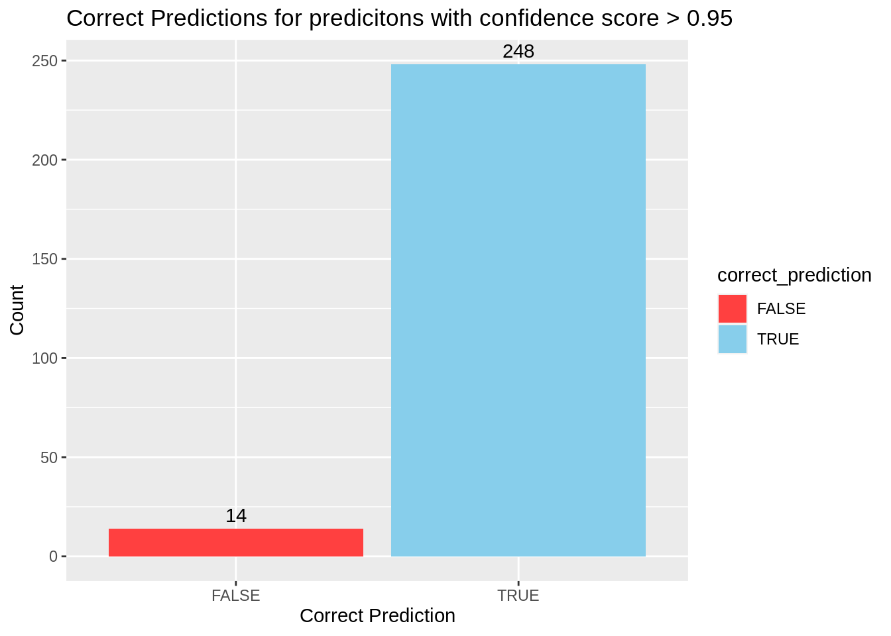

Chapter 6 Repdrocuing
In this part we will be reproducing an analysis with data supplied by J. Louter (INT/ILC) Different compounds were tested on adult C.elegans and the amount of offspring were counted.
6.1 Getting the data
First we will need to get the data from somewhere, we use wget to download the file excel file from github.
# Go to data_raw
cd data_raw/
# Download the excel sheet dataset
wget -O "CE.LIQ.FLOW.062_Tidydata.xlsx" https://github.com/DataScienceILC/tlsc-dsfb26v-20_workflows/raw/main/data/CE.LIQ.FLOW.062_Tidydata.xlsxNow we can read the file into R.
# Load libraries
library(readxl)
library(dplyr)##
## Attaching package: 'dplyr'## The following objects are masked from 'package:stats':
##
## filter, lag## The following objects are masked from 'package:base':
##
## intersect, setdiff, setequal, union# Read the excel file
C.elegans_data <- read_excel(path = "data_raw/CE.LIQ.FLOW.062_Tidydata.xlsx")
# Display the important rows
C.elegans_data %>% select(c(RawData, compName, compConcentration))## # A tibble: 360 × 3
## RawData compName compConcentration
## <dbl> <chr> <chr>
## 1 44 2,6-diisopropylnaphthalene 4.99
## 2 37 2,6-diisopropylnaphthalene 4.99
## 3 45 2,6-diisopropylnaphthalene 4.99
## 4 47 2,6-diisopropylnaphthalene 4.99
## 5 41 2,6-diisopropylnaphthalene 4.99
## 6 35 2,6-diisopropylnaphthalene 4.99
## 7 41 2,6-diisopropylnaphthalene 4.99
## 8 36 2,6-diisopropylnaphthalene 4.99
## 9 40 2,6-diisopropylnaphthalene 4.99
## 10 38 2,6-diisopropylnaphthalene 4.99
## # … with 350 more rowsHere we see that compConcentration is of chr type, so we have to change it into a numeric type.
# Load readr
library(readr)
# Use parse_number to change the conecentration into numeric
C.elegans_data$compConcentration <- parse_number(C.elegans_data$compConcentration)
# Display the rows again
C.elegans_data %>% select(c(RawData, compName, compConcentration))## # A tibble: 360 × 3
## RawData compName compConcentration
## <dbl> <chr> <dbl>
## 1 44 2,6-diisopropylnaphthalene 4.99
## 2 37 2,6-diisopropylnaphthalene 4.99
## 3 45 2,6-diisopropylnaphthalene 4.99
## 4 47 2,6-diisopropylnaphthalene 4.99
## 5 41 2,6-diisopropylnaphthalene 4.99
## 6 35 2,6-diisopropylnaphthalene 4.99
## 7 41 2,6-diisopropylnaphthalene 4.99
## 8 36 2,6-diisopropylnaphthalene 4.99
## 9 40 2,6-diisopropylnaphthalene 4.99
## 10 38 2,6-diisopropylnaphthalene 4.99
## # … with 350 more rows# Load required libraries
library(ggplot2)
# Create scatterplot
ggplot(C.elegans_data, aes(x = compConcentration, y = RawData, color = compName, shape = expType)) +
geom_point() +
labs(x = "Compound Concentration", y = "Raw Data Counts") ## Warning: Removed 5 rows containing missing values (geom_point).
The graph is really cramped into the left part because of a couple of very high concentrations. This occurs because the concentrations are created by diluting the previous solution by 1/10.
An obvious fix for this is to use an log10 transformation on the x-axis.
# Create plot, note that we added + 0.01 this is becasue the log10 of 0 is undefined.
# So adding 0.01 makes sure that points where concentration is 0 (controlNegative) show up in the graphggplot(C.elegans_data, aes(x = log10(compConcentration + 0.01), y = RawData, color = compName, shape = expType)) +
geom_point(position = position_jitter(width = 0.2, height = 0.2)) + # Add jitter
labs(x = "Log10(Compound Concentration)", y = "Raw Data Counts")## Warning: Removed 5 rows containing missing values (geom_point).
This looks way better, we also added some jitter to prevent points from overlapping.
The positive control for this experiment is 1.5% ethanol solution
Both the positive control and the control Vehicle A are in percentage ethanol solution. We can use a formula to transfer these to nM like the rest. \[nM=(x*10^7)/46,07\] Where x is the percentage ethanol. Here we use this formula to change the percentages to molarity but its important to do this only in the rows where the compount is ethanol and the compunit pct.
# Change compConcentration where compname is Ethanol and compUnit pct
C.elegans_data$compConcentration <- ifelse(C.elegans_data$compName == "Ethanol" & C.elegans_data$compUnit == "pct",
(C.elegans_data$compConcentration * 10^7) / 46.07,
C.elegans_data$compConcentration)We also create a faceted graph to make it a bit easier to see the different controls.
# Create a faceted scatterplot with log-transformed x-axis and jitter using crosses
ggplot(C.elegans_data, aes(x = log10(compConcentration + 0.01), y = RawData, color = compName)) +
geom_point(shape = "+", size = 3, position = position_jitter(width = 0.2, height = 0.2)) +
labs(x = "Log10(Compound Concentration)", y = "Raw Data Counts") +
facet_wrap(~expType, scales = "fixed", ncol = 2) + # split graph in 4 for every exptype
theme_minimal()## Warning: Removed 5 rows containing missing values (geom_point).ggplot(C.elegans_data, aes(x = log10(compConcentration + 0.01), y = RawData, color = compName, shape = expType)) +
geom_point(position = position_jitter(width = 0.2, height = 0.2)) + # Add jitter
labs(x = "Log10(Compound Concentration)", y = "Raw Data Counts") ## Warning: Removed 5 rows containing missing values (geom_point).